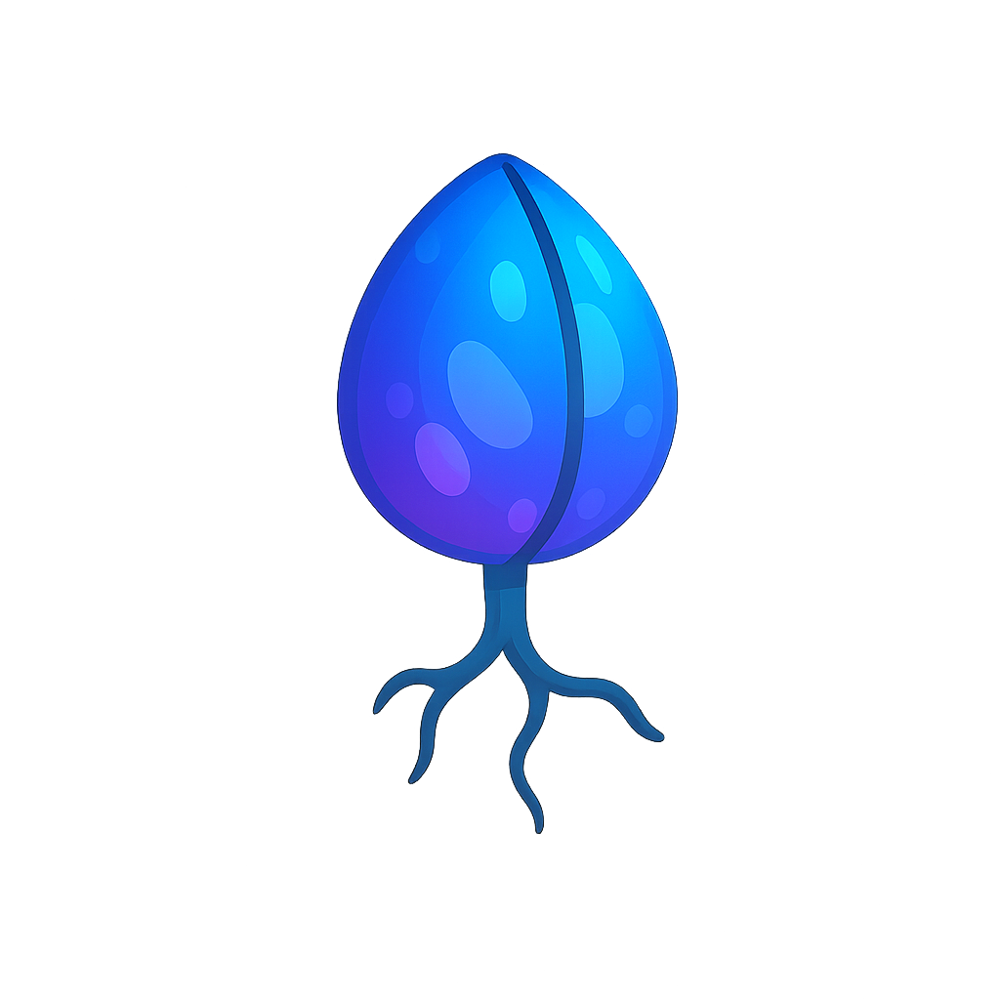

Bootyverse Demo
SeeSee: "Touch the seed to begin the growth cycle."
Overview
Zoe: "Farming ain’t what it used to be. Out here in the Bootyverse, you’re not just plantin’ seeds — you’re makin’ promises to the soil."
SeeSee: "The Syndicate of Villatic Vixens (SVV) began as a one-girl glyph-coded experiment. I didn’t plan for others to join... but the land had other ideas."
Zoe: "Now we got fruit thicker than scrolls and herbs whisperin’ their own names. Welcome to the growhouse of the Bootyverse."
Inputs & Compost System
SeeSee: "Everything feeds the feed. The compost archive is categorized by compound tags — NPK, calcium, glyph resonance, lunar soak levels..."
Zoe: "...and don’t forget the swamp juice and fish guts. That’s the good funk."
- Mining → mineral-rich dust and soft-stone fragments
- Fishing → fish guts, algae slime, river pearls
- Kitchen waste → peel piles, rind essence, flavor echoes
- Alchemy → flower tinctures and heat-infused elixirs
Outputs🍑
- Vegetables & Grains: rootstack carrots, golden corn, echo wheat, bloatatoes
- Fruits & Trees: cheekfruit, citrus bells, whisperplums
- Herbs: mint, mandrake, dreamleaf
- Special Crops: prismachrome blooms, curvevine, bloomshroom
Alien Seed System
Zoe: "Okay, so one day this ship just lands in our plot like a comet with a purse. Out comes FiddleFax with a box of seeds she swore were humming."
SeeSee: "And they were. My extractor started sparking before I even touched them. These plants aren’t from here... but they like it here."
- Spiraflora — Glows faintly, thrives on sulfur. Hates eye contact.
- Moonfig Vine — Only fruits under full moons. Tastes like nostalgia.
SeeSee: "Extract carefully. These seeds are sensitive to tone and tempo."
Zoe: "Yeah don’t be stompin’ near ‘em — I learned the hard way."
Seasonal Soilglyph Blessings
SeeSee: "Every new season unlocks a glyph. We don’t know who made them. Maybe the soil did. Maybe it was us all along."
- 🌞 Blaze Spiral: +Yield for heat-loving crops
- 🌕 Mooncoil: +Flavor & XP, crops sparkle under moonlight
- 🌑 Shadow Whorl: +Growth speed for roots & herbs
“The soil remembers more than we do,” SeeSee whispers, tracing a glyph with her spade.
“It knows when it’s time to reward those who listen.”
Notable NPCs
- SeeSee — Curve Curator & Archivist; records compost experiments and crop lore.
- FiddleFax — Tinkerer & explorer; brings alien seeds from her cosmic journeys.
- Zoe — Medieval-hearted ENFP; intuitive grower with soft chaos and strong conviction.
Philosophy & Flavor
SeeSee: "We don’t farm food. We cultivate echoes — memories wrapped in peel and stem."
Zoe: "We turn old stories into soil. We coax new legends out of tomatoes."
SVV believes growth doesn’t happen by force — only by vibe, timing, and trust. The harvest always comes, but never twice the same.